السلسلة 122
السيارة (صنف B) · 40 سؤال. كل سؤال فيه الصورة والصوت. اختار الجواب (ولا جوج إلا كانو صحاح)، ورك على «تأكيد» باش تشوف واش صبتي.
- 40سؤال
- 32باش تنجح
- 1 – 4جواب واحد ولا أكثر
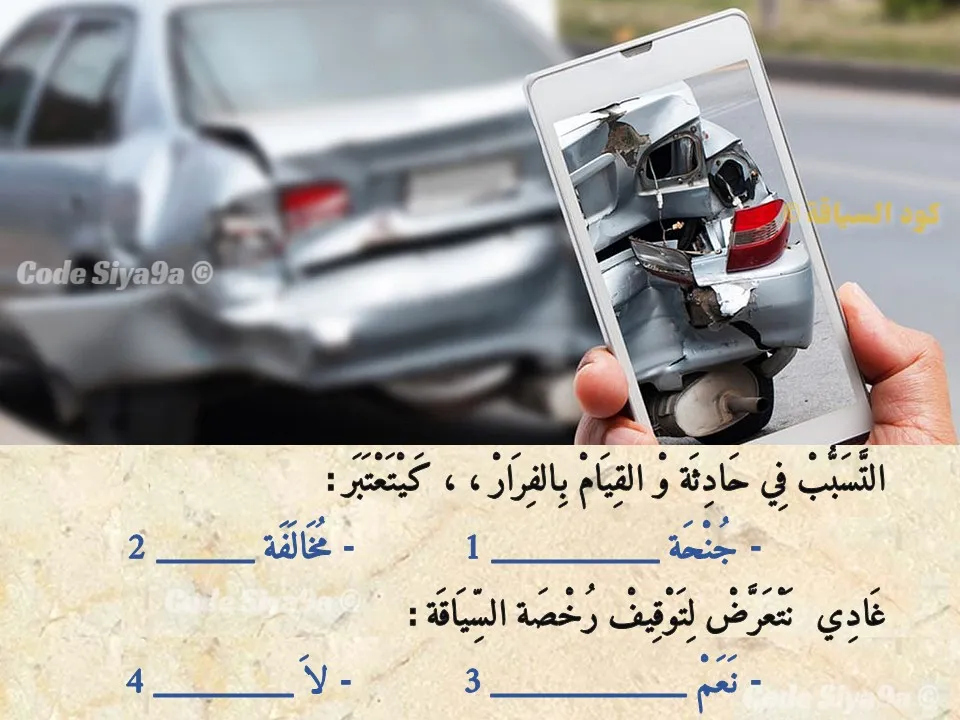
الكلافيي: 1–4 للجواب، Enter للتأكيد وللسؤال الجاي.
السلسلة 122 · النتيجة ديالك
0 / 40
السلسلة 122
السيارة (صنف B) · 40 سؤال، بالصوت، مع الجواب الصحيح والشرح.
السؤال 1
بيّن الجواب
الجواب الصحيح: 1 و 3
لأجوبة الصحيحة هي: جُنْحَة (1) ونَعَم (3).
إليك التفاصيل القانونية حسب مدونة السير المغربية لهذا الفعل الخطير:
لماذا هي جُنحة (Délit)؟ التسبب في حادثة سير مادية أو جسمانية ثم الفرار لا يُعتبر مخالفة بسيطة، بل هو جريمة تسمى "جنحة الفرار" لأن السائق يحاول التملص من المسؤولية الجنائية والمدنية.
توقيف رخصة السياقة: نعم، يتعرض السائق فوراً لتوقيف رخصة السياقة (Suspension) كإجراء إداري وقضائي، وقد تصل العقوبة إلى الحرمان النهائي من الرخصة في بعض الحالات الخطيرة.
العقوبات الأخرى: بالإضافة لتوقيف الرخصة، قد يواجه السائق عقوبة حبسية وغرامات مالية ثقيلة تضاعف العقوبة الأصلية للحادثة.السؤال 2
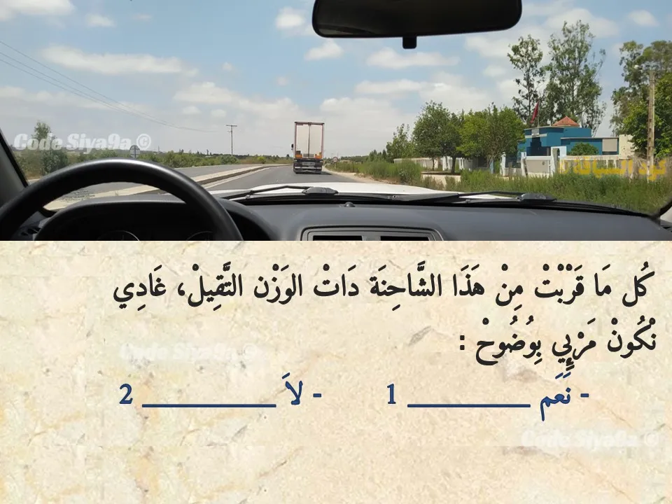
بيّن الجواب
الجواب الصحيح: 2
الجواب الصحيح هو: لا (2).
إليك السبب القانوني والتقني لهذه القاعدة المهمة:
حجب الرؤية: الشاحنات الكبيرة وذات الوزن الثقيل تحجب الرؤية تماماً عما يدور أمامها بسبب حجمها وعلوها.
الزوايا الميتة: كلما اقتربت أكثر من خلف الشاحنة، دخلت في "الزوايا الميتة" (Angles morts) للسائق، مما يجعله لا يراك، وأنت أيضاً لا ترى الطريق أمامه.
مسافة الأمان: يجب دائماً ترك مسافة أمان كافية خلف الشاحنات لكي تتمكن من رؤية إشارات المرور أو أي خطر مفاجئ قد يضطر الشاحنة للتوقف فجأة.السؤال 3
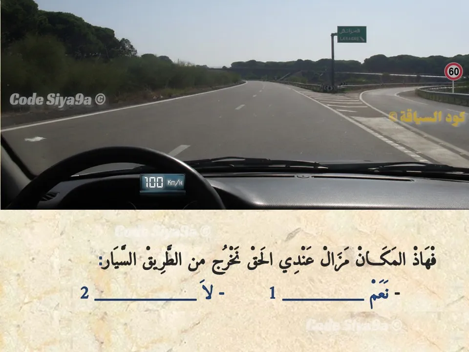
بيّن الجواب
الجواب الصحيح: 2
الجواب الصحيح للسؤال الأخير هو: لا (2) 🚫.
الشرح باختصار:
تجاوز المخرج: لقد تجاوزت بالفعل النقطة التي يبدأ فيها مسلك الخروج.
خط التنبيه: يفصل بينك وبين المخرج الآن "خط تنبيه" بقطع متقاربة جداً، وتغيير الاتجاه فوقه يشكل خطراً كبيراً ⚠️.
العبور فوق المناطق المخططة (الزيبرا) ممنوع كلياً في قانون السير 🚫🛣️.السؤال 4
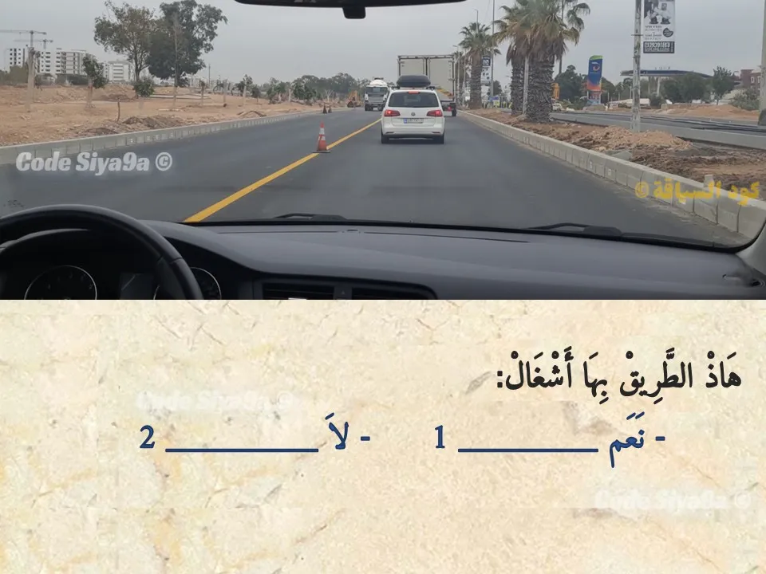
بيّن الجواب
الجواب الصحيح: 1
الجواب الصحيح هو: 1 - نعم ✅
وجود الخط الأصفر المتصل على الأرض يشير إلى تغيير مؤقت في حركة السير بسبب الأشغال.
ظهور المخروط الطرقي في وسط الطريق.
الأتربة والحواجز على جوانب الطريق تؤكد وجود أشغال عمومية في المنطقة.السؤال 5
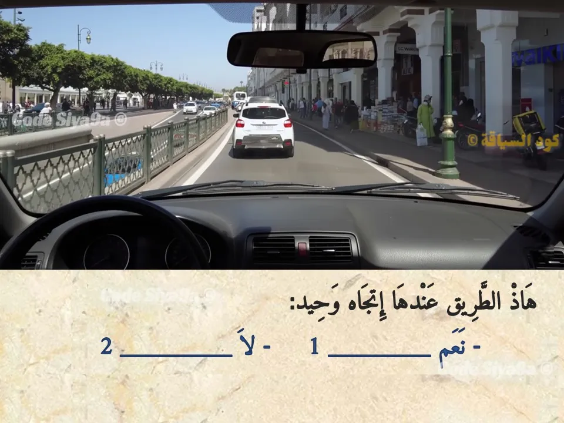
بيّن الجواب
الجواب الصحيح: 1
لماذا؟
الخط المتصل على اليسار: في مدونة السير، وجود خط أبيض متصل في أقصى اليسار يعني دائماً أن الطريق ذات اتجاه واحد (Sens unique). 🛣️
إذا كان الطريق في اتجاهين، يكون الخط على اليسار متقطعاً أو غير موجود. 🚗السؤال 6
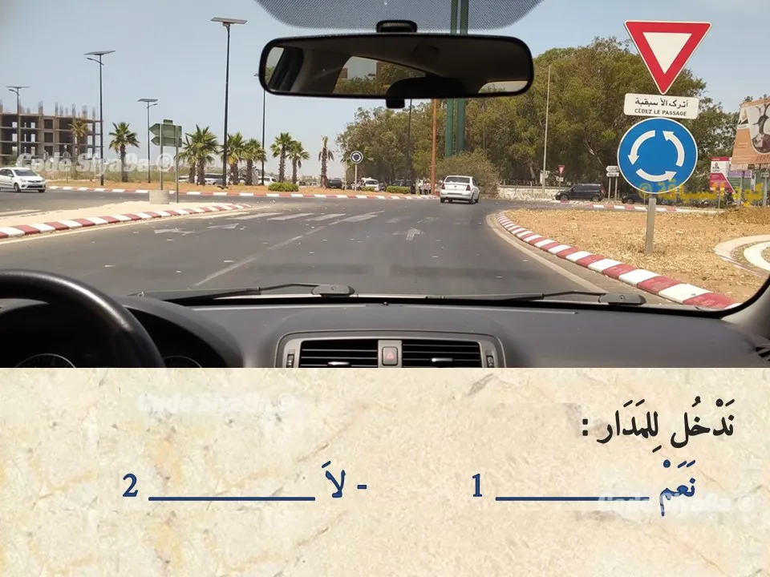
بيّن الجواب
الجواب الصحيح: 2
الجواب الصحيح هو: 2 - لا ❌
علامة "ليس لك حق الأسبقية" (المثلث المقلوب): تفرض عليك إعطاء الأسبقية للسيارات القادمة من اليسار (داخل المدار). 🛑
وجود سيارة بيضاء داخل المدار: يجب عليك الوقوف أو تخفيف السرعة تماماً والسماح لها بالمرور قبل الدخول. 🚗💨
القاعدة في المدار (الرومبوان) الذي يتوفر على علامة "اترك الأسبقية": الأسبقية لليسر.السؤال 7
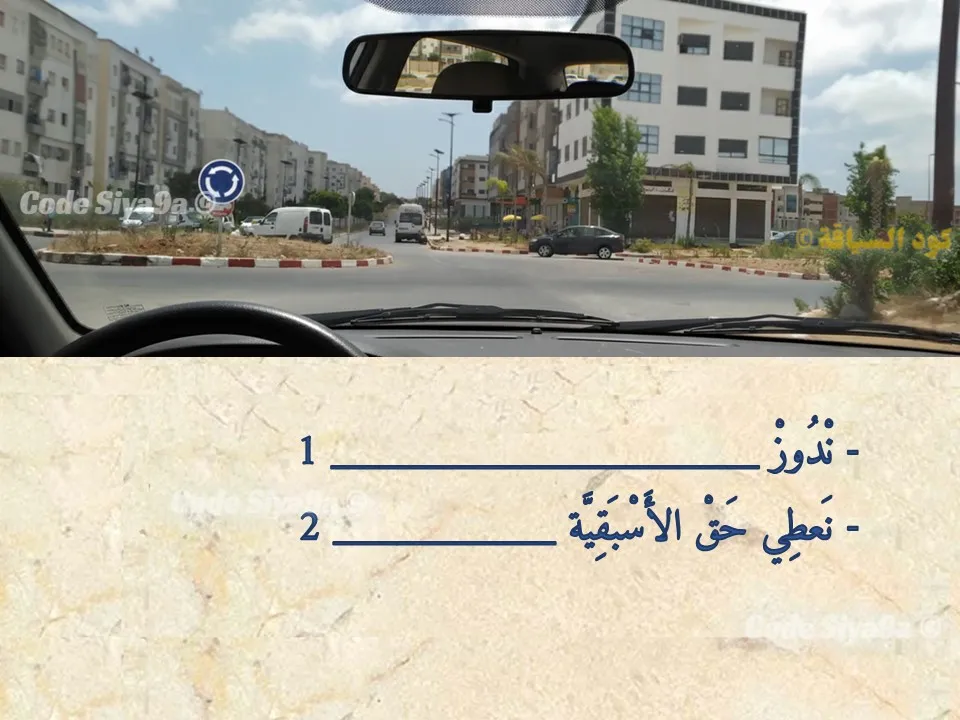
بيّن الجواب
الجواب الصحيح: 2
الجواب الصحيح هو: 2 - نعطي حق الأسبقية 🛑
غياب علامات الأسبقية: في المدار الذي لا يتوفر على علامة "اترك الأسبقية" (المثلث المقلوب)، نطبق قاعدة الأسبقية لليمن (Priorité à droite). ➡️
وجود السيارة: إذا كانت هناك سيارة قادمة من المدخل الذي على يمينك (كما أشرتَ)، ففي هذه الحالة هي "مولاة اليمن" ولها حق الأسبقية في الدخول للمدار قبلك. 🚗
التطبيق العملي: بما أنك تستعد لدخول المدار وهناك عربة في جهة اليمين، يجب عليك تخفيف السرعة أو الوقوف للسماح لها بالمرور أولاً. ✅السؤال 8
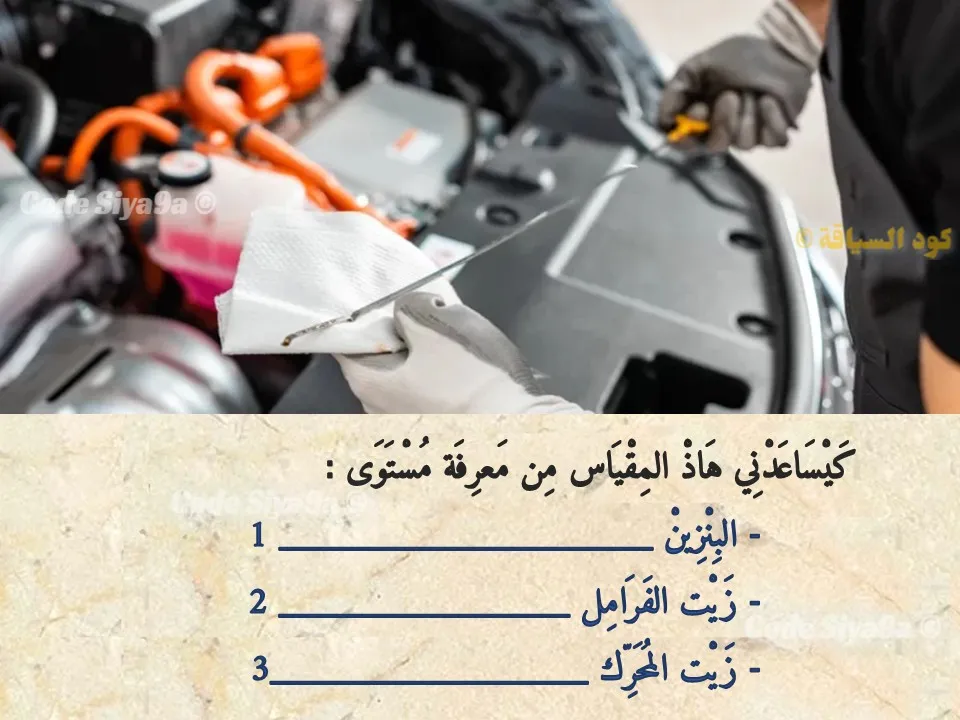
بيّن الجواب
الجواب الصحيح: 3
الجواب الصحيح هو: 3 - زيت المحرك ✅
هذا المقياس المعدني الطويل (La jauge) مخصص حصرياً لقياس مستوى زيت المحرك (Huile moteur). 🛢️
البنزين: يُعرف مستواه من خلال لوحة القيادة (Tableau de bord). ⛽
زيت الفرامل: يُراقب عادةً من خلال خزان بلاستيكي شفاف في المحرك يحتوي على علامتي "Min" و "Max". 🛑السؤال 9
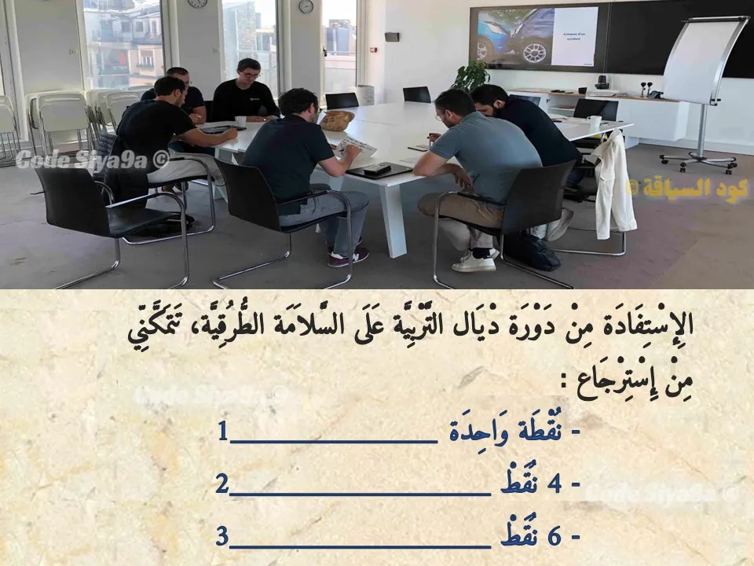
بيّن الجواب
الجواب الصحيح: 2
حسب مدونة السير المغربية، المشاركة في دورة التربية على السلامة الطرقية (Stage de sensibilisation) تمكن السائق من استرجاع 4 نقط كحد أقصى. 📈
يمكن الاستفادة من هذه الدورة مرة واحدة فقط كل سنتين. 🗓️
تهدف هذه الدورات إلى تحسين سلوك السائقين وتوعيتهم بمخاطر الطريق. 🧠السؤال 10
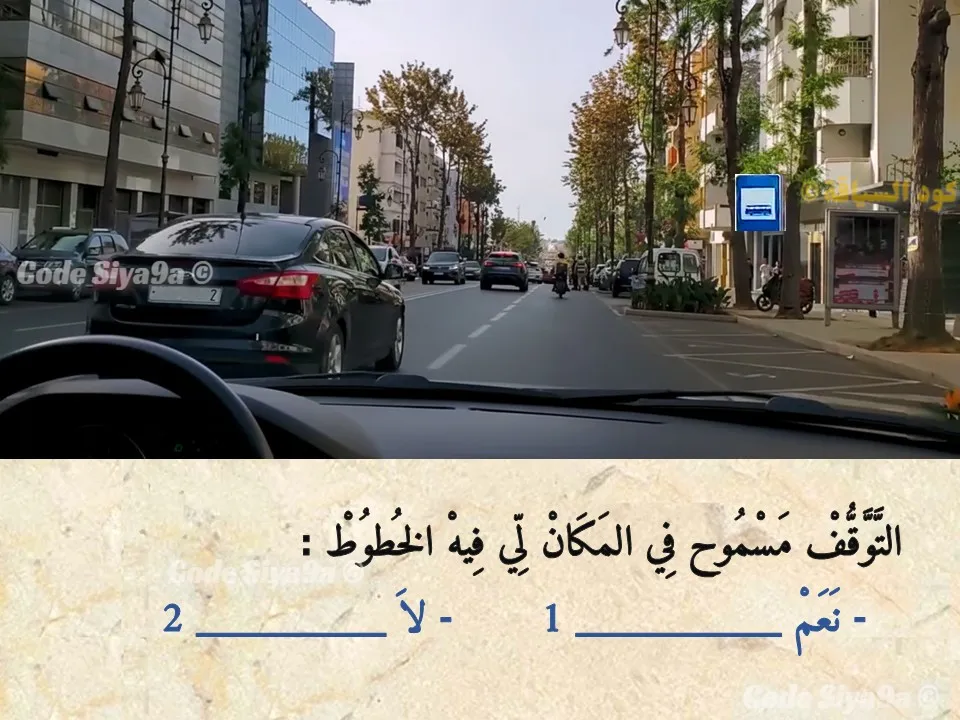
بيّن الجواب
الجواب الصحيح: 2
الجواب الصحيح هو: 2 - لا ❌
محطة الحافلات: نلاحظ وجود علامة زرقاء تشير إلى موقف خاص بالحافلات (Bus)، بالإضافة إلى الخطوط المتعرجة على الأرض. 🚌
قاعدة التوقف والوقوف: يُمنع كلياً التوقف (نزول ركاب) أو الوقوف (ركن السيارة) في الأماكن المخصصة للحافلات وسيارات الأجرة، لأن ذلك يعرقل حركة السير العمومية. 🛑
التشوير الأرضي: الخطوط التي تظهر على اليمين مخصصة لمسار أو توقف الحافلة فقط.السؤال 11
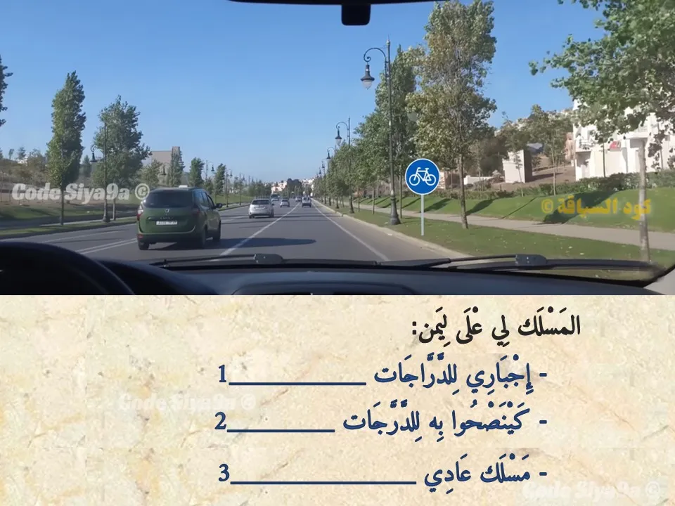
بيّن الجواب
الجواب الصحيح: 1
الجواب الصحيح هو: 1 - إجباري للدراجات ✅
العلامة الزرقاء الدائرية: في قانون السير، العلامات الدائرية الزرقاء هي علامات إجبار (Obligation). 🔵
الرمز داخل العلامة: وجود صورة دراجة يعني أن هذا المسلك مخصص حصرياً للدراجات، وهو إجباري عليهم. 🚲
المنع الضمني: بما أنه إجباري للدراجات، فهو ممنوع على السيارات والعربات الأخرى المرور منه أو الوقوف فيه. 🛑السؤال 12
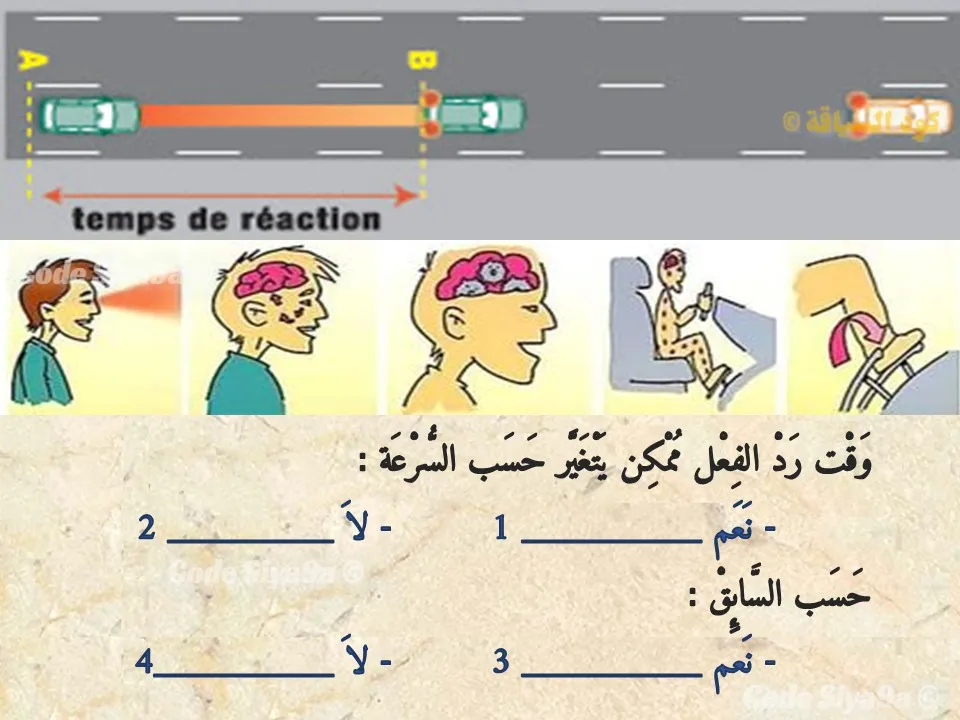
بيّن الجواب
الجواب الصحيح: 2 و 3
الجواب الصحيح هو: 2 و 3 ✅
حسب السرعة (لا - 2): وقت رد الفعل (Temps de réaction) مرتبط بالدماغ وليس بالسرعة.
حسب السائق (نعم - 3): نعم، وقت رد الفعل يتغير من شخص لآخر ومن حالة لأخرى. يزداد هذا الوقت (يصبح أطول وأسوأ) إذا كان السائق:
- متعباً أو مرهقاً. 🥱
- تحت تأثير الأدوية أو الكحول. 💊
- مشتت الذهن (استعمال الهاتف). 📱السؤال 13
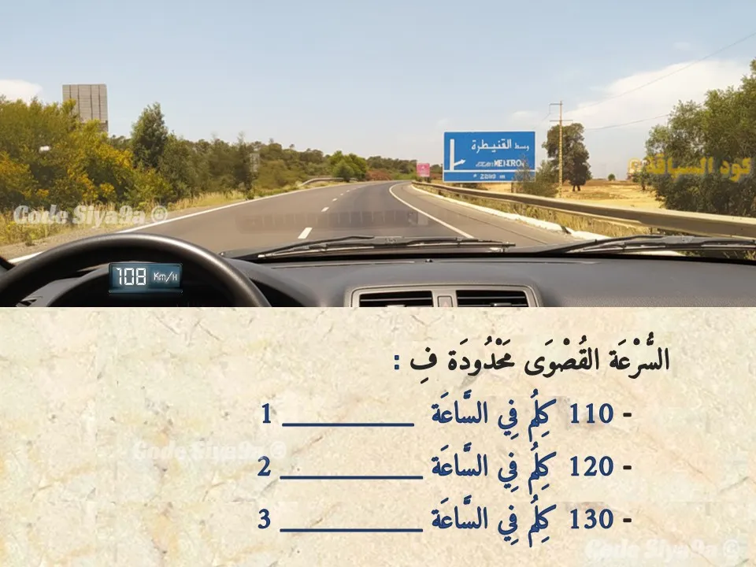
بيّن الجواب
الجواب الصحيح: 2
الجواب الصحيح هو: 2 - 120 كلم في الساعة ✅
نوع الطريق: نحن نسير في طريق سيار (Autoroute)، ويظهر ذلك من خلال الحاجز الأمني على اليمين، غياب حركة السير في الاتجاه المعاكس، واللوحات الزرقاء الكبيرة. 🛣️
القانون: حسب مدونة السير المغربية، السرعة القصوى المسموح بها في الطريق السيار هي 120 كلم/ساعة. 🏎️
ملاحظة: بما أن عداد السيارة يظهر 108 كلم/ساعة، فأنت لا تزال تحت الحد الأقصى المسموح به.السؤال 14
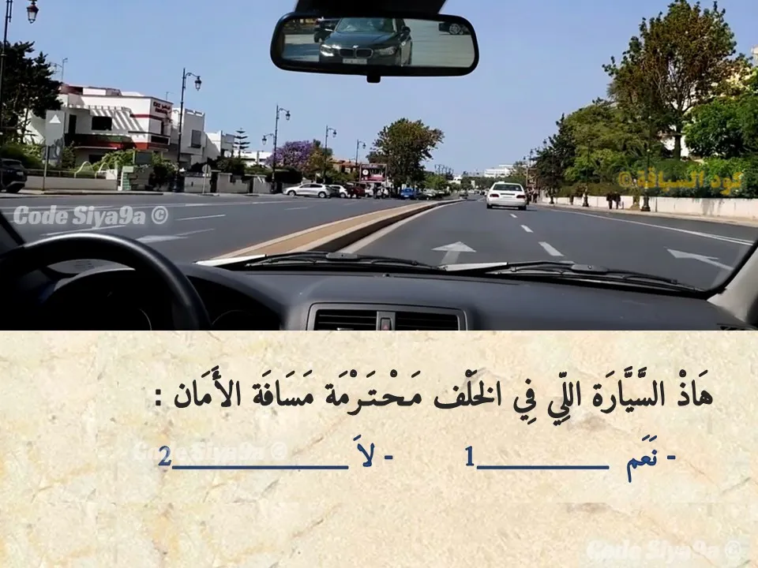
بيّن الجواب
الجواب الصحيح: 2
الجواب الصحيح هو: 2 - لا ❌
المرايا العاكسة: عند النظر في المرآة الداخلية، نلاحظ أن السيارة السوداء قريبة جداً من سيارتك. 🚘
قاعدة مسافة الأمان: يجب دائماً ترك مسافة كافية بينك وبين العربة التي تسبقك لتجنب الاصطدام في حالة الكبح المفاجئ. في الصورة، تظهر السيارة وكأنها ملتصقة بك، مما يعني أنها لا تحترم مسافة الأمان القانونية. 📏⚠️السؤال 15
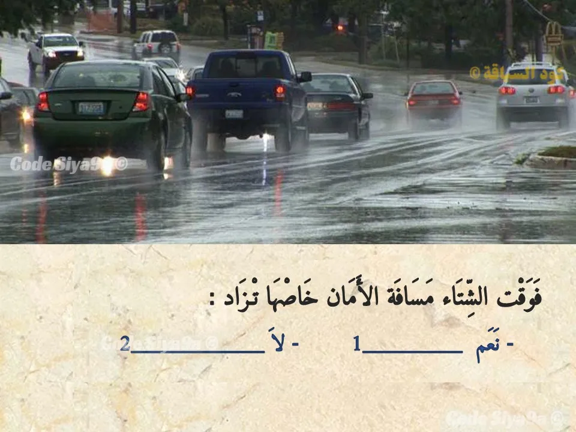
بيّن الجواب
الجواب الصحيح: 1
الجواب الصحيح هو: 1 - نعم ✅
حالة الطريق: في وقت الشتاء (المطر أو الثلج)، يصبح الطريق مبللاً وزلقاً، مما يقلل من تماسك العجلات بالأرض. 🌧️⚠️
مسافة الأمان: بسبب الانزلاق، تحتاج السيارة لمسافة أطول للتوقف عند الكبح. لذا، تفرض مدونة السير مضاعفة مسافة الأمان لضمان تفادي الاصطدام. 📏🚗
قاعدة عامة: عندما تسوء حالة الطقس، يجب الزيادة في مسافة الأمان والنقصان من السرعة.السؤال 16
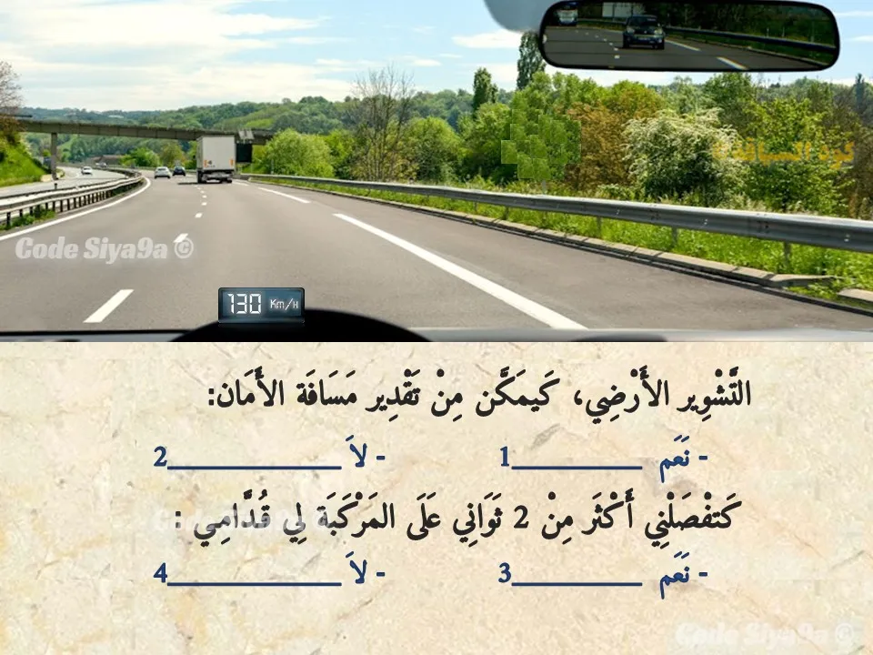
بيّن الجواب
الجواب الصحيح: 1 و 4
التشوير الطرقي كيمكن من حساب او تقدير مسافة الأمان.
في هذا الحالة كتفصلني 2 ديال الخطوط . يعني مسافة 46 متر تقريبا ....
- كنسير ب 130 كلم فالساعة. خلال ثانية وحدة غادي نقطع مسافة :
130/3,6 = 36 متر .
- خلال 2 ثواني غادي نقطع 72 متر .
- المسافة لي غادي نقطع خلال 2 ثواني 72 متر اكبر من المسافة 46 لي بيني و بين المركبة لي قدامي .
يعني كتفصلني قل من 2 ثواني .السؤال 17
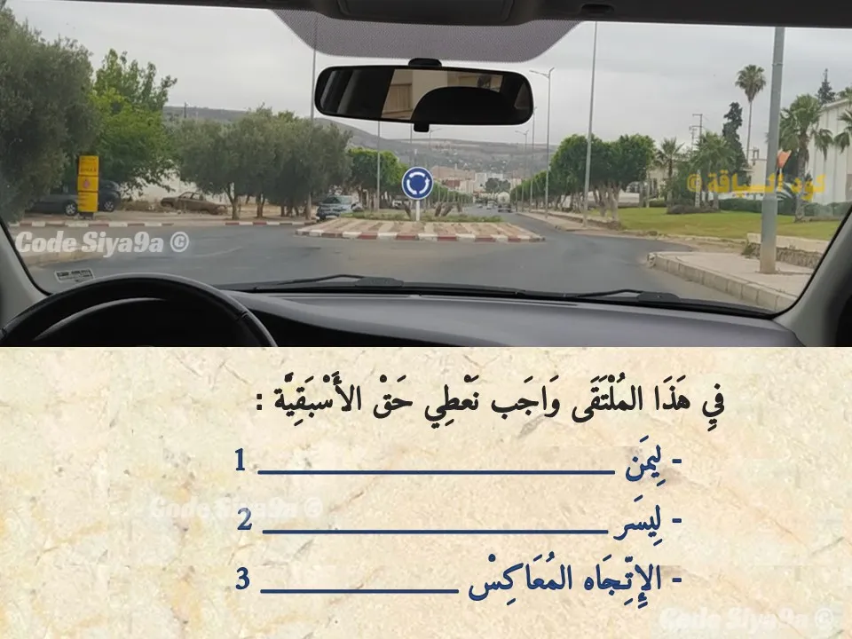
بيّن الجواب
الجواب الصحيح: 1 و 3
في هذا الحالة عندنا مدار مع علامة ديال إجباري ندور في المدار من جهت ليمن.
- في الحالة الأسبقية للي جاي من ليمن . و بالتالي واجب عليا نعطي حق الأسبقية للي جاي من ليمن.السؤال 18
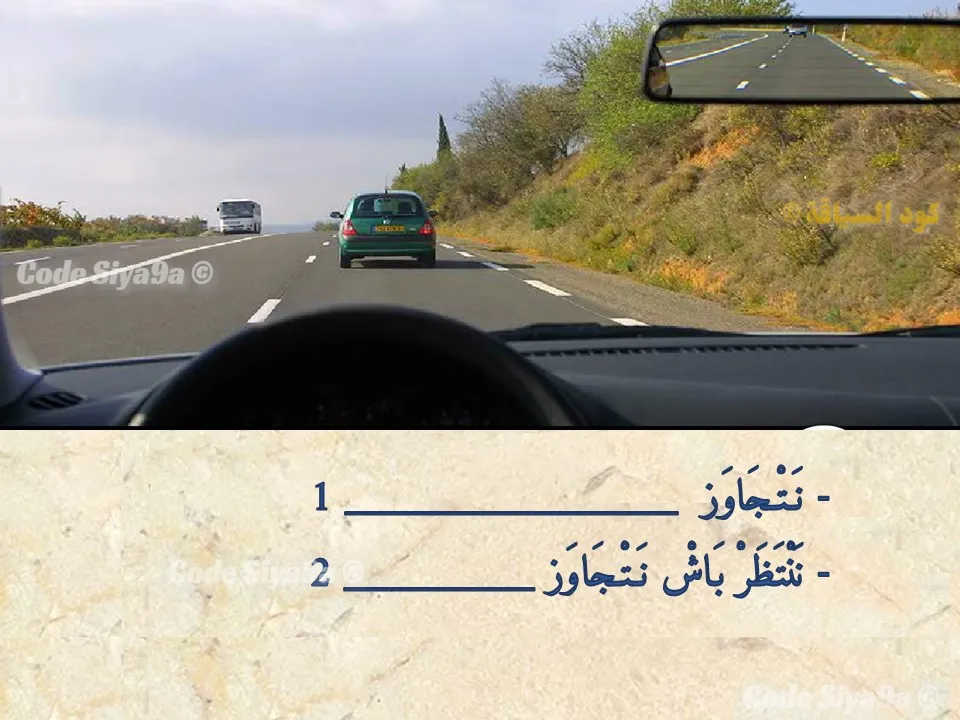
بيّن الجواب
الجواب الصحيح: 2
الجواب الصحيح هو: 2 - ننتظر باش نتجاوز ❌🚗
قاعدة التجاوز: قبل البدء في التجاوز، يجب مراقبة المرآة العاكسة؛ إذا بدأت سيارة خلفك في التجاوز (استعملت مؤشر الاتجاه أو انحازت لليسار)، يُمنع عليك كلياً البدء في التجاوز. 🪞⚠️
الالتزام باليمين: في هذه الحالة، يجب عليك الحفاظ على سرعتك والالتزام بأقصى اليمين لتسهيل مأمورية السائق الذي يتجاوزك. 🏎️💨السؤال 19
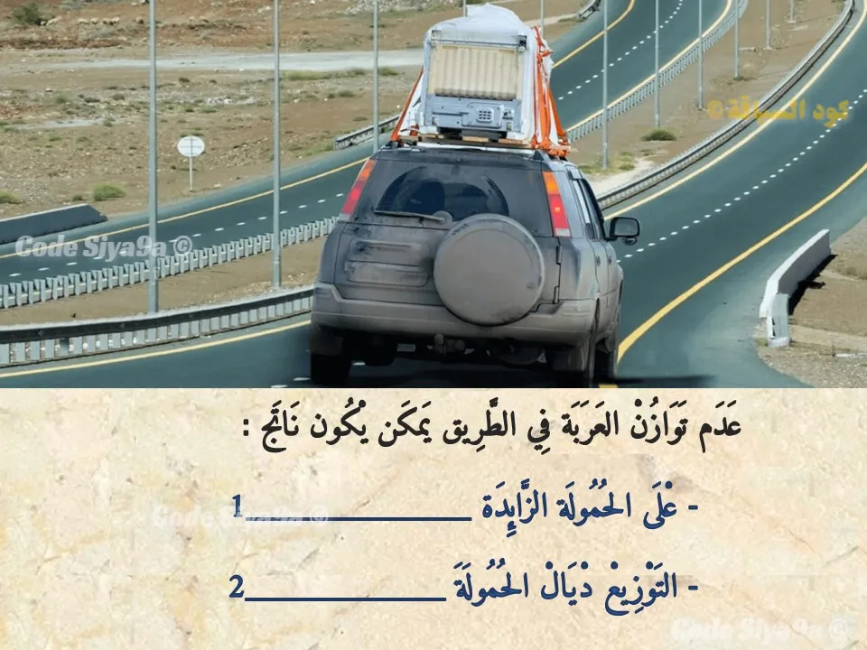
بيّن الجواب
الجواب الصحيح: 2
توزيع الحمولة : حتى لو لم تكن الحمولة زائدة، فإن وضعها بشكل غير متساوٍ (مثلاً وضع ثقل كبير فوق السقف كما في الصورة) يغير من مركز ثقل السيارة، مما يؤدي إلى عدم استقرارها واهتزازها. 📦🚗
السؤال 20
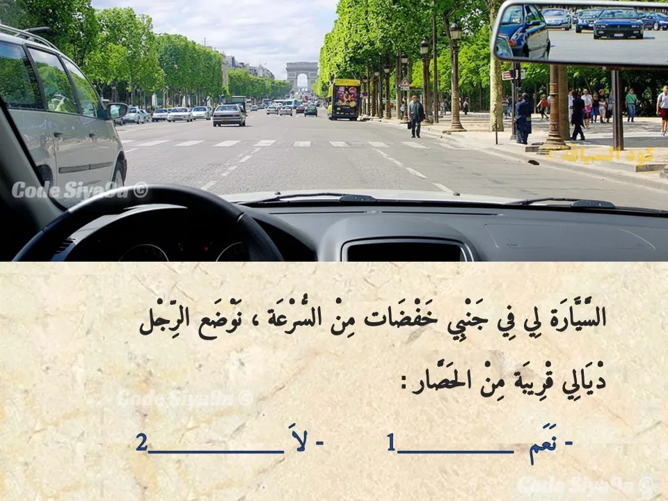
بيّن الجواب
الجواب الصحيح: 1
في هذا الحالة انا قربت من ممر ديال الراجلين. في هذا الحالة السيارة لي في جنبي خفضات السرعة يعني كاين خطر . و بالتالي واحب عليا ننقص من السرعة و نوضع الرجل ديالي قريبة من الحصار .
السؤال 21
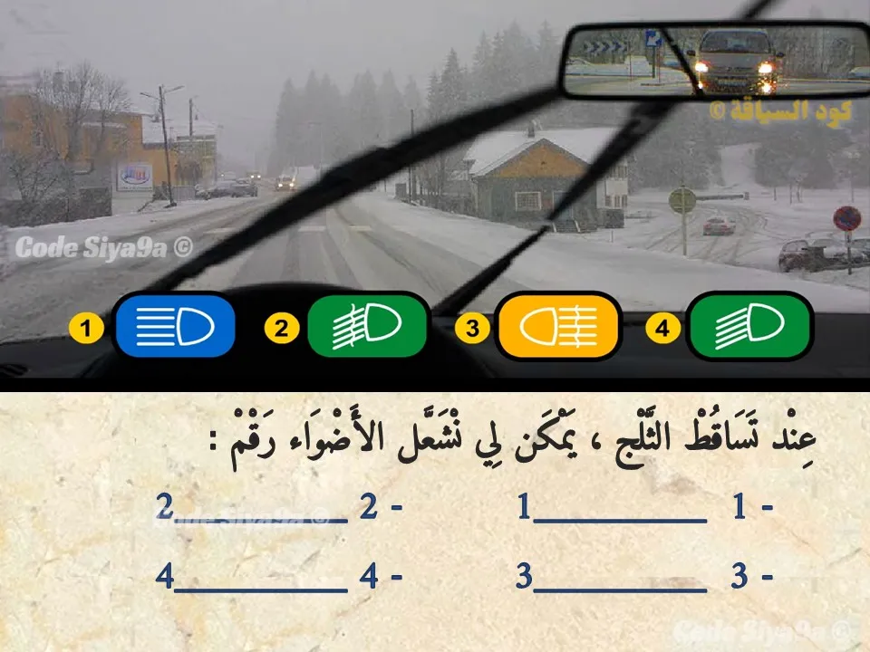
بيّن الجواب
الجواب الصحيح: 2 و 3 و 4
الجواب الصحيح هو: 2 و 3 و 4 ✅
رقم 2 (أضواء التقابل): ضرورية باش تشوف الطريق وباش يتشاف العرض ديال سيارتك بلا ما تعمي اللي جايين قبالتك. 💡
رقم 4 (أضواء الضبابة ديال القدام): كتعاون بزاف في الثلج لأن الضوء ديالها كيكون مشتت لتحت وكيبين جوانب الطريق. 🌨️
رقم 3 (أضواء الضبابة ديال الخلف): في الثلج والضباب ضروري تشعلهم باش اللي جاي وراك يشوفك من بعيد، لأن الرؤية كتكون ضعيفة بزاف. 🛑السؤال 22
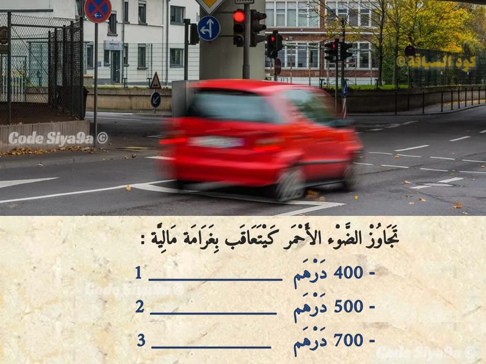
بيّن الجواب
الجواب الصحيح: 3
حسب قانون السير المغربي، يعتبر تجاوز الضوء الأحمر مخالفة من الدرجة الأولى:
الغرامة المادية: هي 700 درهم (يمكن أن تخفض إلى 400 درهم إذا تم الأداء فوراً أو في غضون 24 ساعة، أو 500 درهم في غضون 15 يوماً، ولكن السؤال في الامتحان يسأل دائماً عن الغرامة الأصلية). 💰
خصم النقط: يتم خصم 4 نقط من رصيد رخصة السياقة. 📉السؤال 23
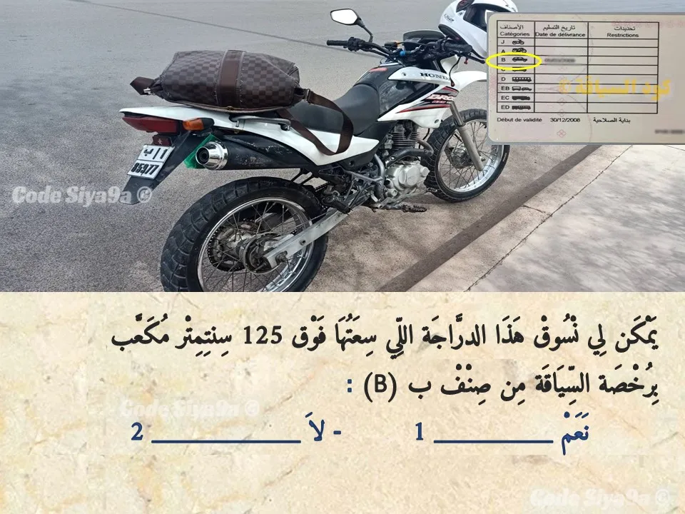
بيّن الجواب
الجواب الصحيح: 2
الجواب هو: 2 - لا ❌
رخصة السياقة من صنف B مخصصة للسيارات (العربات الخفيفة). لسياقة دراجة نارية سعتها فوق 125 سنتيمتر مكعب، يجب الحصول على رخصة من صنف A. 🏍️السؤال 24
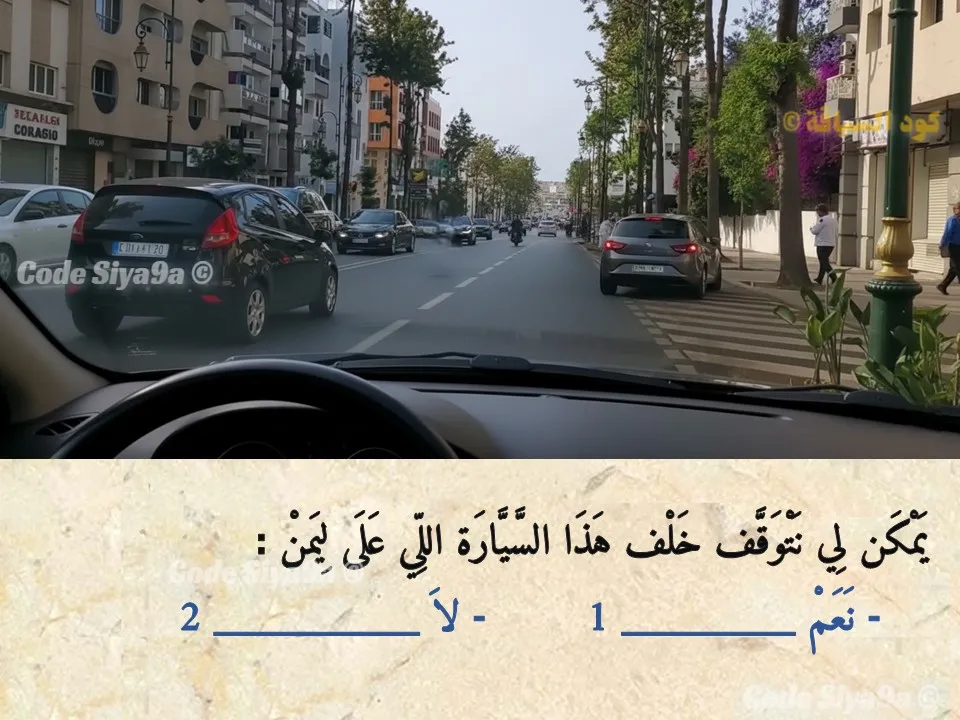
بيّن الجواب
الجواب الصحيح: 2
الخطوط في جنب الطريق كتعلم بلي الوقوف او التوقف ممنوع في هذا المكان .
السؤال 25
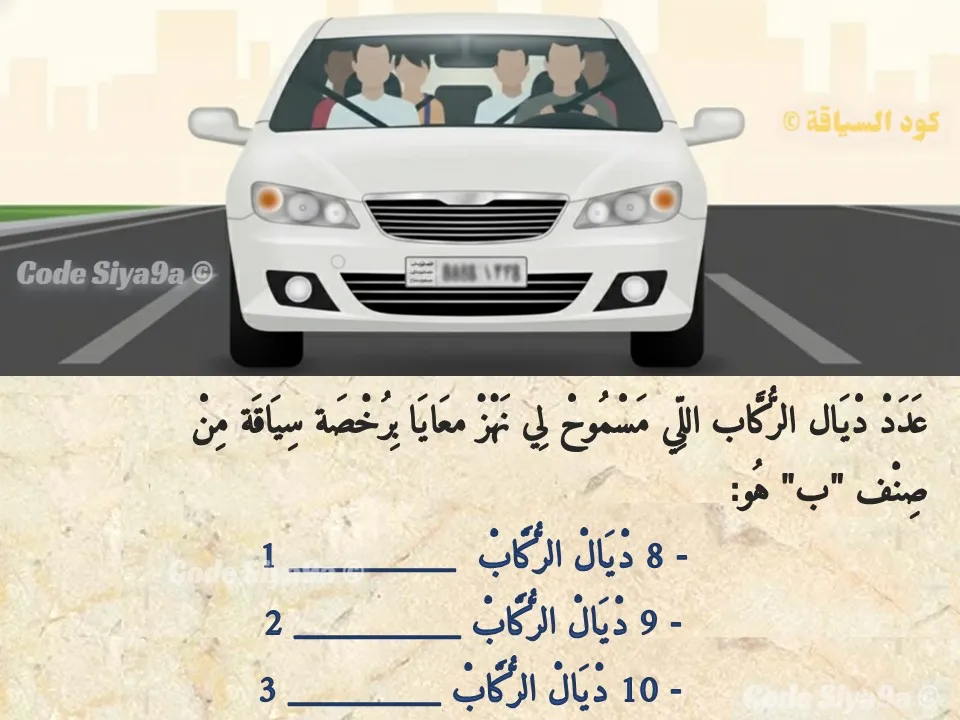
بيّن الجواب
الجواب الصحيح: 1
الجواب الصحيح هو: 1 - 8 ديال الركاب ✅
القاعدة القانونية: رخصة السياقة من صنف "ب" (B) تسمح بسياقة عربة لا يتجاوز عدد مقاعدها 9 مقاعد (باحتساب مقعد السائق). 🚗
صيغة السؤال: السؤال يسأل عن عدد الركاب (البلايص اللي غادي يهز السائق معاه).
الحساب: 9 مقاعد إجمالية - 1 مقعد السائق = 8 ركاب. 👤+👥👥👥👥السؤال 26
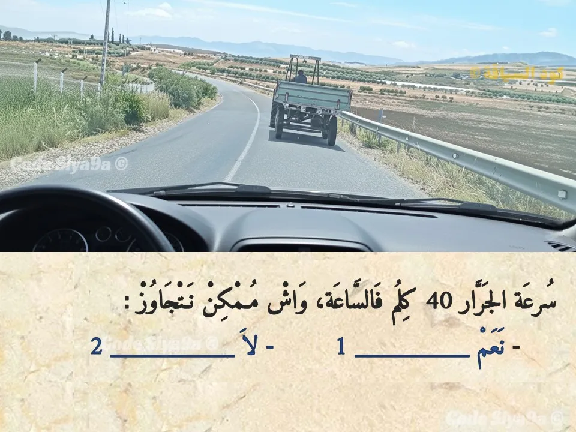
بيّن الجواب
الجواب الصحيح: 2
رغم أن سرعة الجرار بطيئة (40 كلم/س)، إلا أن التجاوز هنا ممنوع تماماً لسبب قانوني واضح في الصورة:
الخط المتصل: نلاحظ وجود خط طولي متصل على يسار السيارة. القاعدة في "الكود" المغربي صارمة: الخط المتصل بمثابة "جدار"، يمنع تجاوزه أو حتى ملامسته مهما كانت الظروف. 🚫🛣️السؤال 27
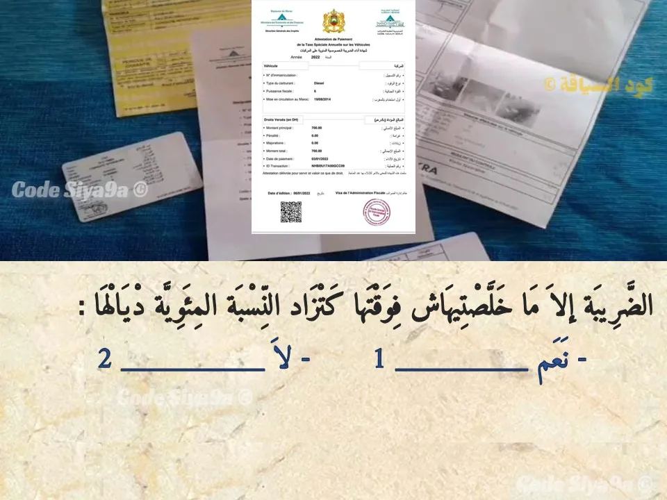
بيّن الجواب
الجواب الصحيح: 1
النسب هي المعمول بها في القانون الضريبي المغربي بخصوص التأخير في أداء الضريبة الخصوصية السنوية على المركبات (Vignette):
15% زيادة كذعيرة عن الشهر الأول من التأخير. 📉
0.5% زيادة إضافية عن كل شهر أو جزء من الشهر الموالي. 💰السؤال 28
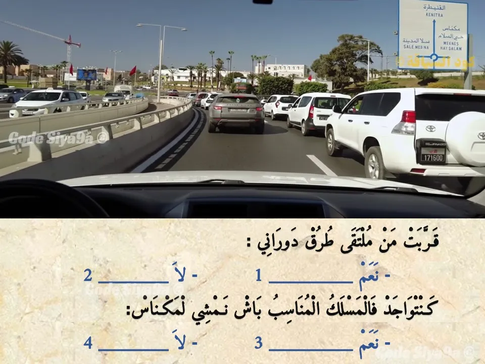
بيّن الجواب
الجواب الصحيح: 1 و 4
الجواب الصحيح هو: 1 و 4 ✅
- كنتواجد فالمسلك المناسب باش نمشي لمكناس؟ (لا - 4):
إذا نظرت إلى اللوحة الزرقاء، ستجد أن مكناس وحي السلام موجودان في جهة اليمين. ↗️
- أنت الآن تتواجد في المسلك الأيسر (المسلك الذي بجانب الحواجز الإسمنتية).
- قاعدة المدار تقول: إذا كنت تريد الذهاب لليمن أو إكمال السير للأمام، يجب أن تشد اليمين. أما المسلك الأيسر فهو مخصص لمن يريد الدوران لليسار أو القيام بنصف دورة (Demi-tour). 🚗💨السؤال 29
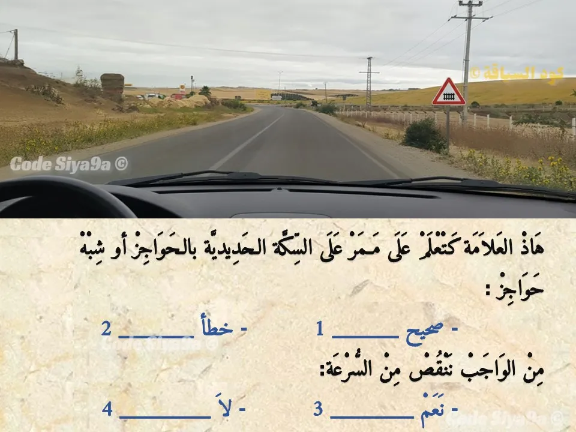
بيّن الجواب
الجواب الصحيح: 1 و 3
الجواب الصحيح هو: 1 و 3 ✅
توضيح سريع:
العلامة (رسم السياج): كتعني ممر السكة الحديدية بالحواجز (محروس). إذن الجواب هو صحيح (1).
السرعة: أمام أي علامة خطر، من الواجب تنقص من السرعة. إذن الجواب هو نعم (3).السؤال 30
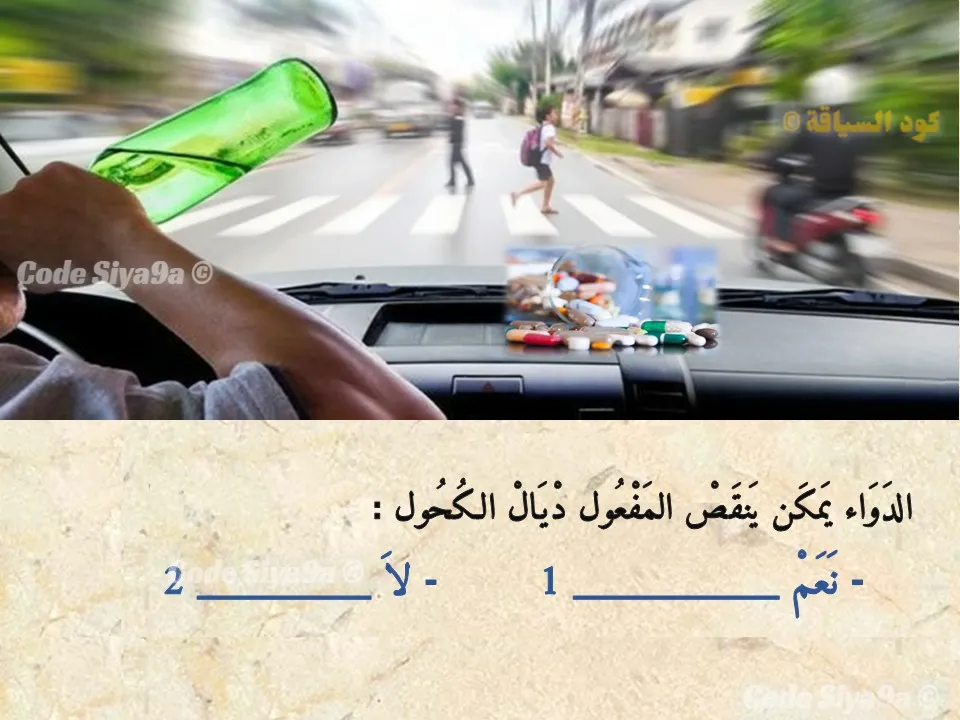
بيّن الجواب
الجواب الصحيح: 2
الجواب الصحيح هو: 2 - لا ❌
التوضيح: الدواء لا ينقص من مفعول الكحول، بل على العكس، تناولهما معاً يزيد من خطورة التأثير على السياقة ويزيد من وقت رد الفعل بشكل كبير.السؤال 31
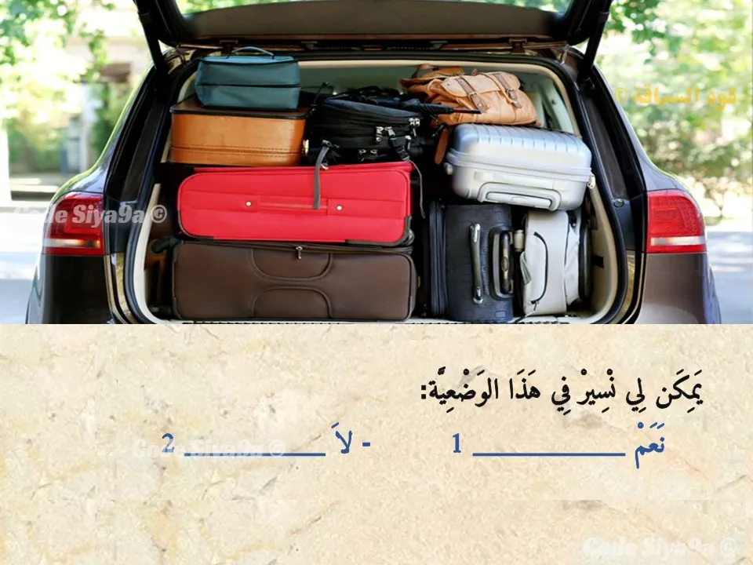
بيّن الجواب
الجواب الصحيح: 2
الجواب هو: 2 - لا ❌
القاعدة: يُمنع السير والحقيبة مفتوحة أو الحمولة تحجب الرؤية في المرآة الداخلية. كما أن الحمولة يجب أن تكون مأمنة ومغطاة ولا تتجاوز سقف السيارة بطريقة تشكل خطراً. 📦🚫السؤال 32
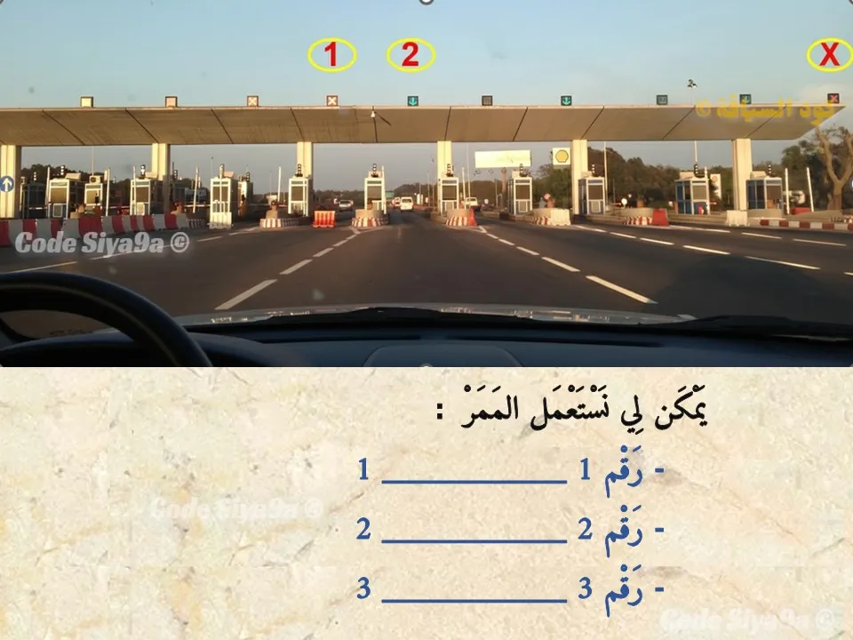
بيّن الجواب
الجواب الصحيح: 2
الجواب الصحيح هو: رقم 2 فقط ✅
ضوئية الموجودة فوق كل ممر:
الممر رقم 1: يوجد فوقه علامة (X) حمراء، وهذا يعني أن الممر مغلق ولا يمكن استعماله. ❌
الممر رقم 2: يوجد فوقه سهم أخضر يشير للأسفل، وهذا يعني أن الممر مفتوح ومتاح للاستعمال. ✅
الممر رقم 3 (أو المشار إليه بـ X في أقصى اليمين): تظهر عليه أيضاً علامة (X) حمراء، مما يعني أنه غير متاح. ❌السؤال 33
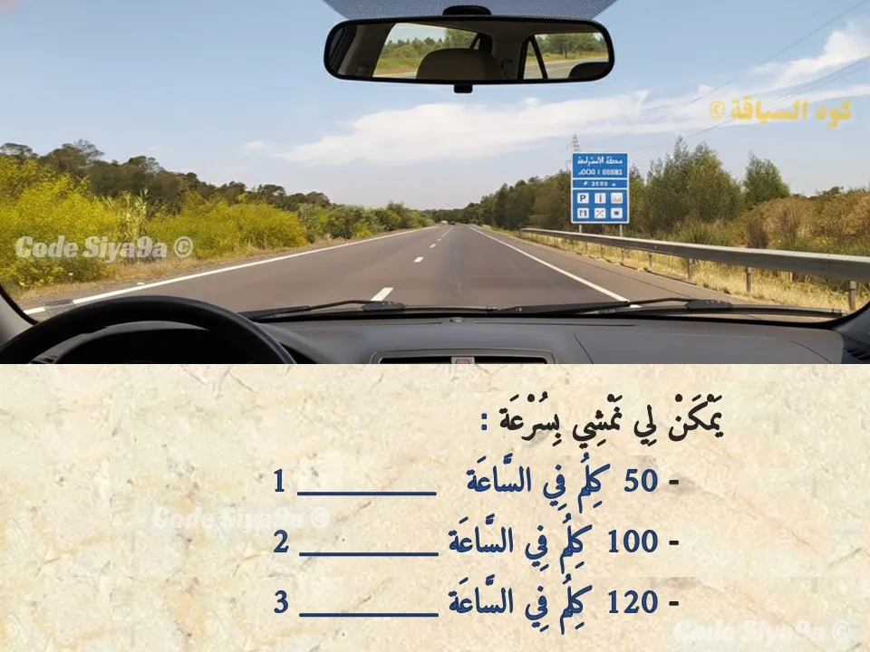
بيّن الجواب
الجواب الصحيح: 2 و 3
بصيغة "يمكن لي نمشي"، فهذا يعني أنه مسموح لك باختيار أي سرعة لا تتجاوز الحد القانوني المسموح به في تلك الطريق:
الحد الأقصى: في الطريق السيار، السرعة محددة في 120 كلم/س.
الخيارات المتاحة:
- 50 كلم/س (1):غير مسموحة السرعة الدنيا الإجبارية في الطريق السيار هي 60 كلم/س.
- 100 كلم/س (2): مسموحة لأنها أقل من 120.
- 120 كلم/س (3): مسموحة لأنها هي السرعة القصوى.السؤال 34
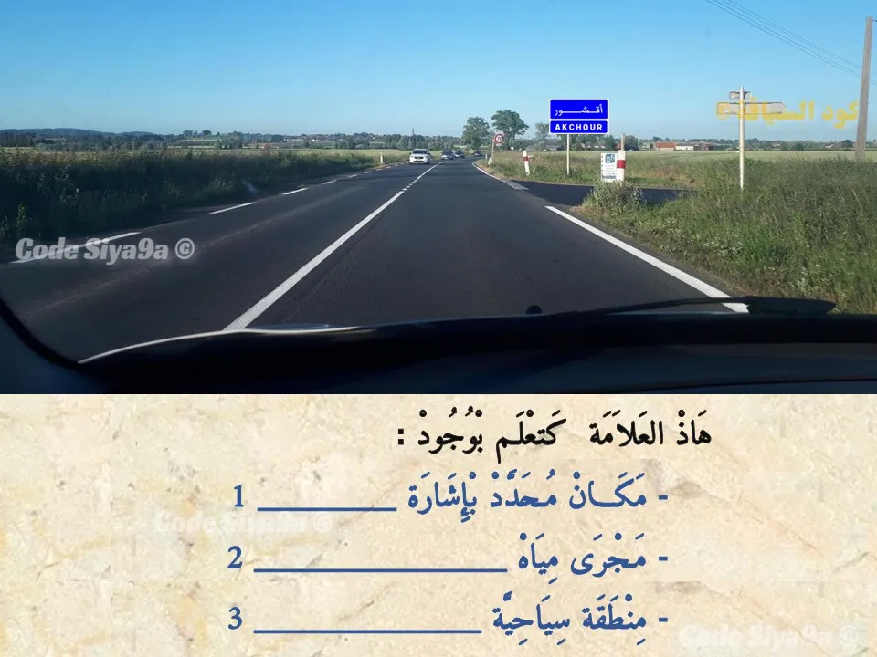
بيّن الجواب
الجواب الصحيح: 1
الجواب الصحيح هو: 1 ✅
تحليل العلامة (أقشور): اللوحة الزرقاء التي مكتوب عليها "أقشور" (AKCHOUR) هي علامة تشوير طرقي تحدد اسماً لمكان جيوغرافي معين وصلنا إليه.السؤال 35
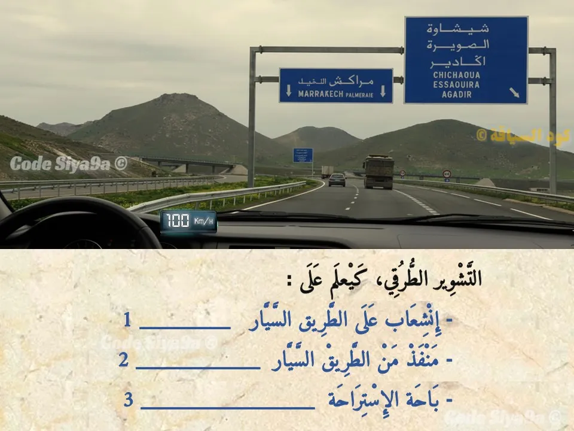
بيّن الجواب
الجواب الصحيح: 2
الجواب الصحيح هو: 1 ✅
التوضيح: التشوير الطرقي (اللوحات الزرقاء الكبيرة) يعلم على انشعاب في الطريق السيار (Bifurcation).
انشعاب (1): يعني أن الطريق ستنقسم إلى اتجاهين رئيسيين (مثلاً اتجاه يكمل لمراكش النخيل واتجاه يذهب نحو شيشاوة/الصويرة/أكادير).السؤال 36
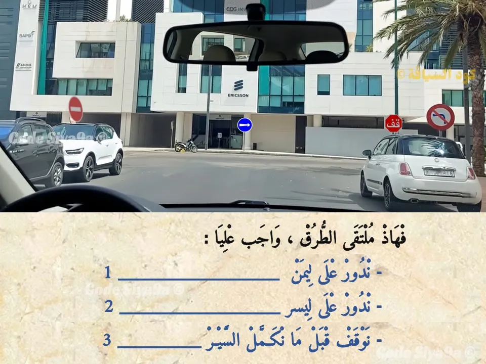
بيّن الجواب
الجواب الصحيح: 1 و 3
الجواب الصحيح هو: 1 و 3
التشوير الطرقي كيضم:
- علامة قف كتجبرني نوقف قبل ما نكمل السير.
- علامة الاجبار ، كتجبرني ندور على ليمن .
- علامة المنع ، كتمنعني ندور على ليسر.السؤال 37
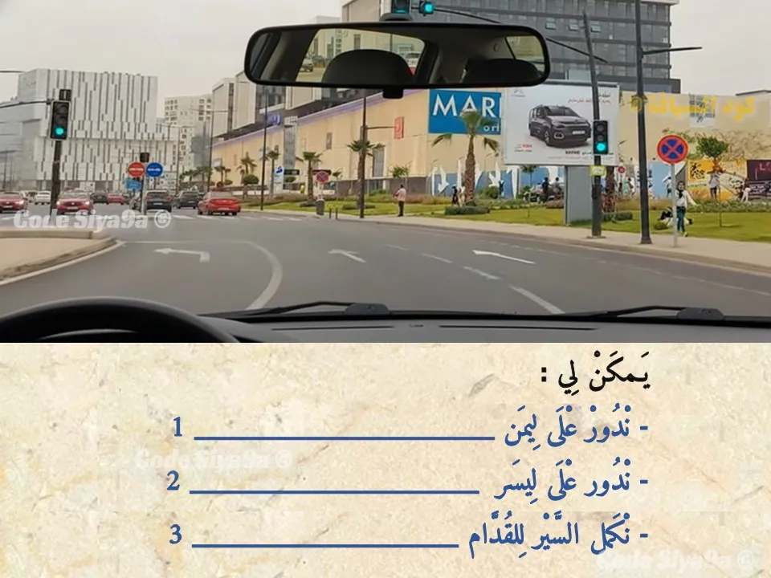
بيّن الجواب
الجواب الصحيح: 3
الجواب الصحيح هو: 3 فقط. ✅
3. نكمل السير للقدام: هو الخيار الإجباري الوحيد في هذه الحالة. ⚖️
1 و 2: يصبحان ممنوعين نهائياً لأن السهم يفرض عليك اتجاهاً واحداً لا غير.
باختصار: إذا كان السهم يشير للأمام فقط، فأنت ملزم بتتبع مساره وعدم تغيير الاتجاه يميناً أو يساراً. 🚦السؤال 38
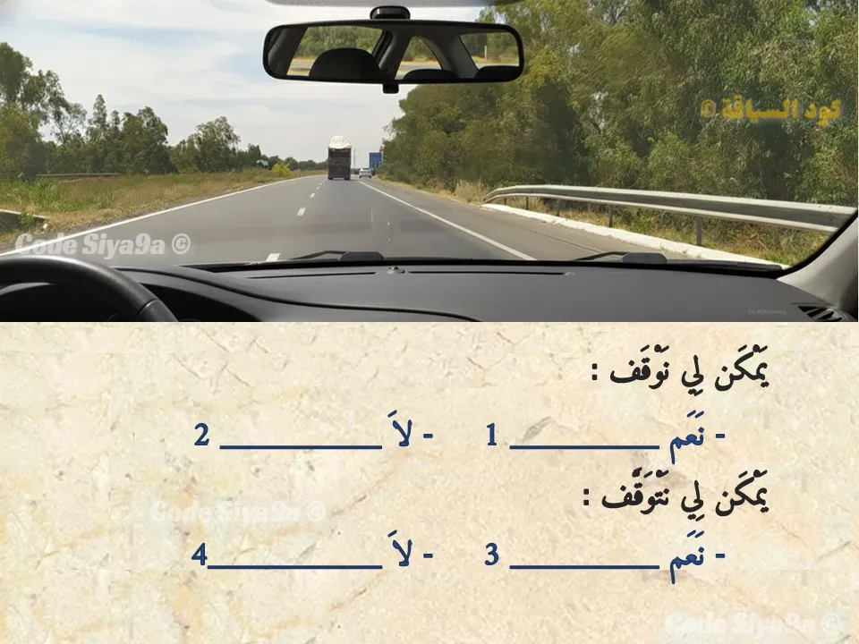
بيّن الجواب
الجواب الصحيح: 2 و 4
يمكن لي نوقف : لا (2). الوقوف ممنوع كلياً في الطريق السيار، سواء على قارعة الطريق أو في شريط التوقف الاستعجالي، إلا في حالة عطب تقني أو حادث. 🚗
يمكن لي نتوقف : لا (4). التوقف (ترك السيارة ومغادرتها) ممنوع منعاً باتاً في الطريق السيار وفي شريط التوقف الاستعجالي. 🛑السؤال 39
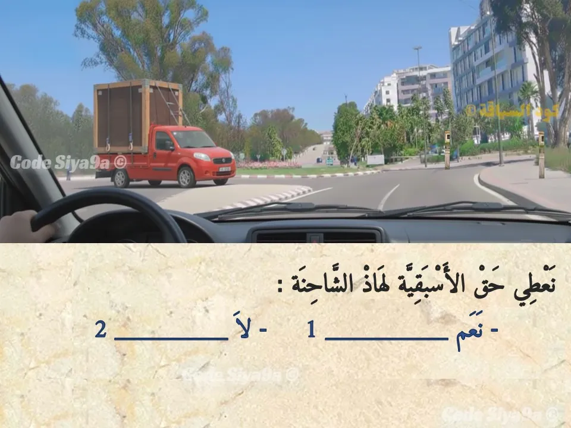
بيّن الجواب
الجواب الصحيح: 2
في غياب أي علامة تشوير (مدار فارغ من العلامات)، تُطبق قاعدة الأسبقية لليمن. ⚖️
بناءً على هذا المنطق:
وضعية الشاحنة: هي تتواجد على يسارك.
وضعيتك: أنت تتواجد على يمين الشاحنة.
النتيجة: بما أن يمينك "خاوي"، فأنت صاحب حق الأسبقية، والشاحنة هي التي يجب أن تنتظر.
إذن الجواب هو 2 - لا (لا نعطي حق الأسبقية للشاحنة). ✅السؤال 40
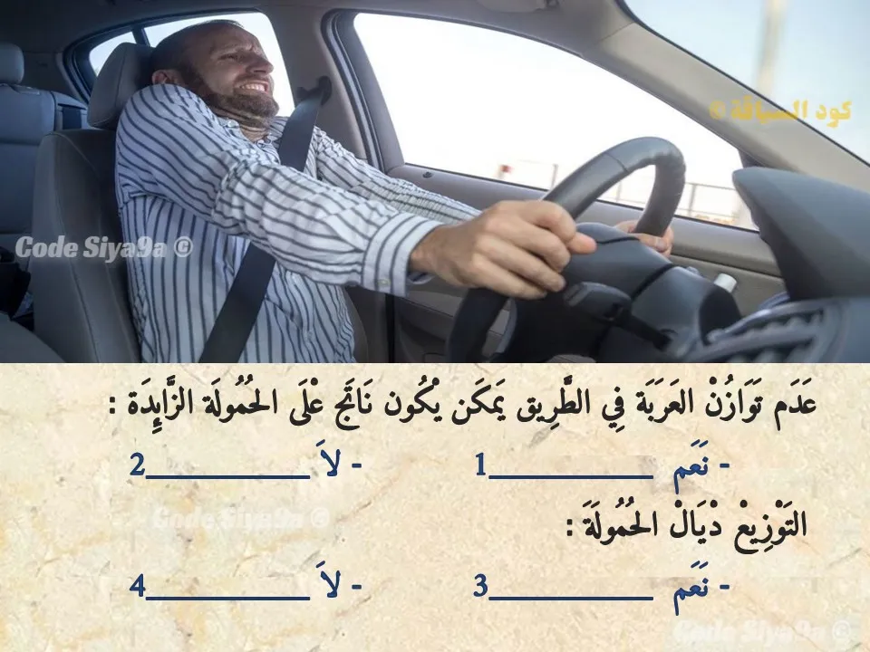
بيّن الجواب
الجواب الصحيح: 2 و 3
الجواب الصحيح هو: 2 و 3 ✅
2 - لا: لأن الحمولة الزائدة بحد ذاتها (إذا كانت موزعة بانتظام) لا تسبب "عدم التوازن" بل تسبب بطء الإقلاع وطول مسافة الكبح وإجهاد المحرك. 📉
3 - نعم: لأن توزيع الحمولة هو العامل الرئيسي والمباشر في توازن العربة. إذا كان التوزيع سيئاً، ستميل السيارة لجهة معينة وتفقد استقرارها في الطريق. ⚖️